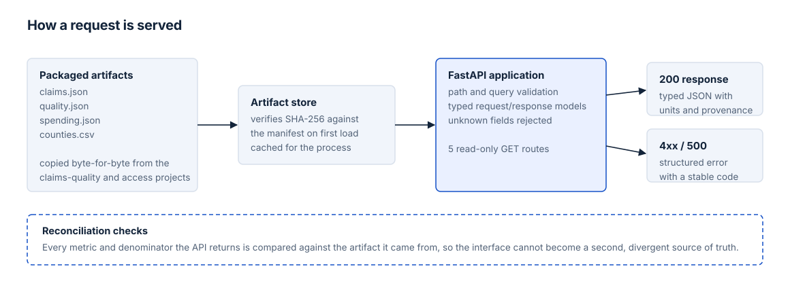

Analytics engineering · Python · FastAPI · Typed contracts
Healthcare Analytics API
Validated results need a clear contract before another application can use them. This service serves the completed analyses without rerunning their pipelines.
Problem
The claims and access projects produce validated aggregate results. Without a serving layer, every consumer has to rerun those pipelines or parse dashboard files directly, which couples each application to the analytical implementation and lets copies drift out of step with the reviewed numbers.
The requirement was a small read-only contract: stable field names, explicit units and denominators, and a response that states which version of the analysis it came from.
API design

FastAPI routes call a small artifact service, which reads immutable files packaged with the application. Those artifacts are copied byte-for-byte from pinned commits of the source projects, so the API never recomputes an analytical result — it serves a reviewed snapshot. There is no database and no live ingestion, because the dataset is small, fixed, and only changes through a reviewed artifact version.
| GET endpoint | Purpose |
|---|---|
/health | Service response and packaged artifact loading |
/quality/summary | Controlled defect-evaluation results |
/spending/summary | Validated baseline and join-error comparison |
/access/counties | Massachusetts county indicators; optional selection filter |
/access/counties/{county_fips} | One available county |
The first request loads the artifact store once per process, verifying file hashes and county coverage before serving anything. Counties are returned in FIPS order, and the optional selection filter narrows the collection to the baseline or capacity-stable shortlist.
Why packaged artifacts instead of a database?
The service serves a reviewed snapshot, not transactional or changing records. Packaging the artifacts keeps installation simple and makes the response version explicit. Hash checks detect accidental changes, and updating the data is a deliberate, reviewed artifact-version change rather than a silent write.
Contracts and validation
Responses are typed models rather than loose dictionaries. Each metric carries its name, value, unit, basis, denominator, and source period, so no number arrives without the context needed to read it. Provenance fields record the source project, its version, and the artifact version behind the response. Financial totals stay in integer USD cents, a null value means unavailable rather than zero, and unknown extra fields and nonfinite numbers are rejected outright.
Ambiguous requests are refused instead of guessed. A county FIPS must be exactly five ASCII digits; unknown query keys, unsupported filter values, and repeated parameters are all rejected rather than silently ignored.
- 400 — malformed FIPS or repeated query parameters.
- 422 — unsupported query parameter or filter value.
- 404 — well-formed but unavailable county, or unknown route.
- 405 — unsupported method on a valid route.
- 500 — internal failure with a fixed, safe message.
Every error uses the same envelope with a stable machine-readable code. Responses never expose stack traces, local paths, or the raw input. OpenAPI describes both success and error schemas, and locally generated Swagger documentation makes the contracts inspectable.
Reconciliation and testing
The tests check values, not just status codes. Every metric and denominator returned by the service is compared against the copied source artifacts, and provenance hashes are verified on load. That establishes serving fidelity — the API reports what the analyses actually produced — rather than any new scientific validation of the underlying results.
The automated suite also covers endpoint behaviour, typed response shapes, invalid and malformed input, missing or altered artifacts, and repeatability across runs. Installation is verified from a clean clone into a fresh environment, with the tests exercising the installed package rather than the working tree, and a local server serving the documented endpoints and OpenAPI pages.
Example usage
These are recorded responses from the verified API. This website does not run an API server or send requests.
View the complete recorded JSON response
Limitations
This is a portfolio analytics service, not a production healthcare platform or clinical system. The claims data are synthetic and the access indicators are historical public-data aggregates. No authentication, cloud hosting, live data feed, or production availability is claimed or implied.
The service inherits every limitation of the source projects. Faithful reconciliation shows that it serves their outputs correctly; it does not independently validate the analyses behind them.